| ✅ | ✅ | ✅ | ✅ | ✅ | ✅ |
|---|
tools – General purpose tools¶
Common tools for timing, data logging, and linear algebra.
Timing tools¶

- awaitwait(time)¶
Pauses the user program for a specified amount of time.
- Parameters:
time (Number, ms) – How long to wait.
- class StopWatch¶
A stopwatch to measure time intervals. Similar to the stopwatch feature on your phone.
- time() int: ms¶
Gets the current time of the stopwatch.
- Returns:
Elapsed time.
- pause()¶
Pauses the stopwatch.
- resume()¶
Resumes the stopwatch.
- reset()¶
Resets the stopwatch time to 0.
The run state is unaffected:
If it was paused, it stays paused (but now at 0).
If it was running, it stays running (but starting again from 0).
Input tools¶
- read_input_byte() int | None¶
Reads one byte from standard input without blocking.
- Returns:
The numeric value of the byte read or
Noneif no data is available.
| ❌ | ❌ | ❌ | ✅ | ✅ | ❌ |
|---|
Shows a menu on the hub display and waits for the user to select an item using the buttons. Can be used in your own menu-program that lets you choose which of your other programs to run.
Note that this is just a convenience function that combines the display, buttons, and waits to make a simple menu. This means that it can be used anywhere in a program, not just at the start.
from pybricks.tools import hub_menu
# This example assumes that you have three other programs in Pybricks Code,
# called "fly_mission", "drive_mission", and "zigzag". This example creates a
# menu that lets you pick which one to run.
# Choose a letter.
selected = hub_menu("F", "D", "Z")
# Based on the selection, run a program.
if selected == "F":
import fly_mission
elif selected == "D":
import drive_mission
elif selected == "Z":
import zigzag
Linear algebra tools¶
| ❌ | ✅ | ✅ | ✅ | ✅ | ✅ |
|---|
- class Matrix(rows)¶
Mathematical representation of a matrix. It supports addition (
A + B), subtraction (A - B), and matrix multiplication (A * B) for matrices of compatible size.It also supports scalar multiplication (
c * AorA * c) and scalar division (A / c).A
Matrixobject is immutable.- Parameters:
rows (list) – List of rows. Each row is itself a list of numbers.
- shape¶
Returns a tuple (
m,n), wheremis the number of rows andnis the number of columns.
| ❌ | ✅ | ✅ | ✅ | ✅ | ✅ |
|---|

Multitasking¶
Pybricks supports cooperative multitasking using the async and await
keywords. This allows operations that normally take some time to complete to
run in parallel with other operations.

- awaitmultitask(coroutine1, coroutine2, ...) Tuple¶
Runs multiple coroutines concurrently. This creates a new coroutine that can be used like any other, including in another
multitaskstatement.- Parameters:
- Returns:
Tuple of the return values of each coroutine. Unfinished coroutines will have
Noneas their return value.
- run_task(coroutine)¶
Runs a coroutine from start to finish while blocking the rest of the program. This is used primarily to run the main coroutine of a program.
- Parameters:
coroutine (coroutine) – The main coroutine to run.
The following example shows how to use multitasking to make a robot drive forward, then turn and move a gripper at the same time, and then drive backward.
from pybricks.pupdevices import Motor
from pybricks.parameters import Direction, Port
from pybricks.robotics import DriveBase
from pybricks.tools import multitask, run_task
# Set up all devices.
left = Motor(Port.A, Direction.COUNTERCLOCKWISE)
right = Motor(Port.B)
gripper = Motor(Port.C)
drive_base = DriveBase(left, right, 56, 114)
# Move the gripper up and down.
async def move_gripper():
await gripper.run_angle(500, -90)
await gripper.run_angle(500, 90)
# Drive forward, turn move gripper at the same time, and drive backward.
async def main():
await drive_base.straight(250)
await multitask(drive_base.turn(90), move_gripper())
await drive_base.straight(-250)
# Runs the main program from start to finish.
run_task(main())
- class coroutine¶
- class await¶
Whenever you see a function or method prefixed by await, this means that
it supports multitasking. When running a coroutine with run_task, all
methods and functions prefixed by await will act as coroutines.
If you don’t use multitasking, you can ignore the await keyword and write
programs as usual. Specifically, when run_task is not used, functions
prefixed by await will act as normal functions.